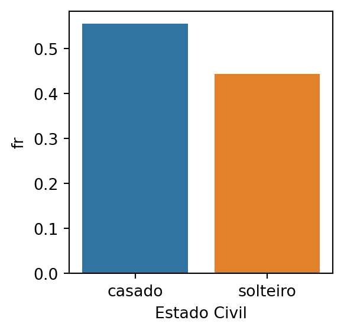
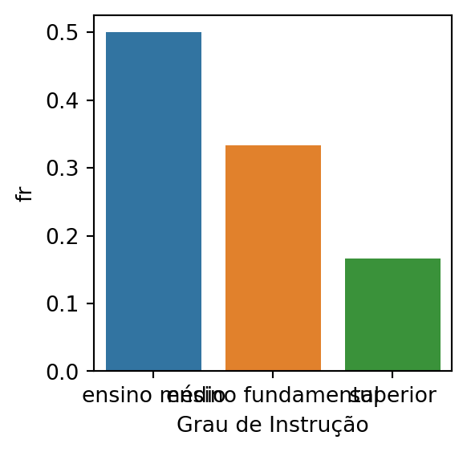
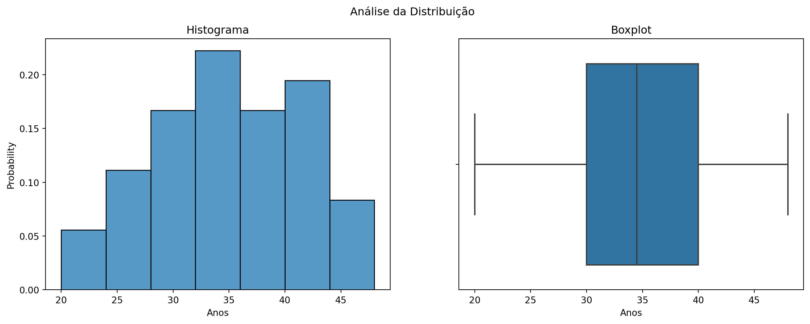
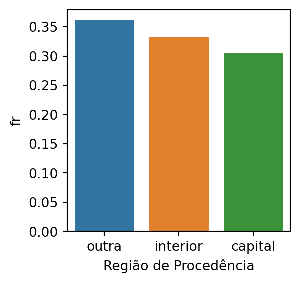
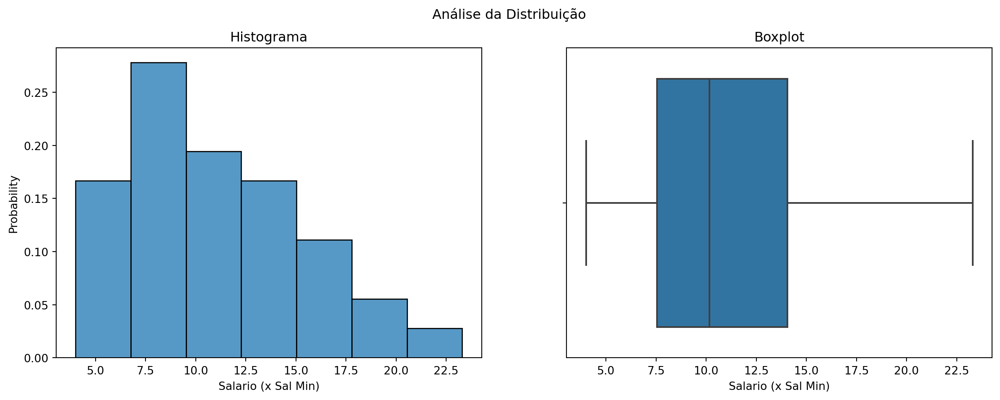
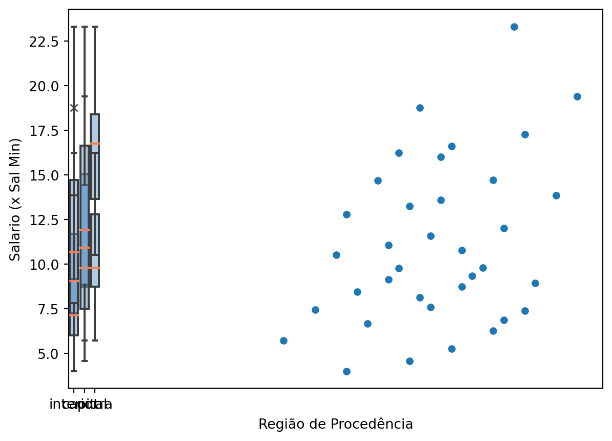

import pandas as pd
import numpy as np
import matplotlib.pyplot as plt
import seaborn as sns
########################## ANÁLISE EXPLORATÓRIA ###############################
#%% ########################## 1. UNIVARIADA ##################################
df = pd.read_excel("Dados_EB.xls", sheet_name = "Tabela 2.1")
# Ajustando cabeçalho
df.columns = df.iloc[0,]
# Removendo colunas desnecessárias
df = (
df
.drop(0, axis = 0)
.drop(['N', 'Meses'], axis = 1)
.reset_index(drop = True)
)
df.columns
"""
Layout de Extração dos Dados
1. Estado Civil : solteiro/casado
2. Grau de Instrução : ensino fundamental, ensino médio, superior
3. N de Filhos : Qtd d Filhos
4. Anos : Idade em anos
5. Região de Procedência: interior, capital ou outra
6. Salario (x Sal Min) : Multiplo do Salário (1x, 2x)
"""
# Temos 36 registros
df.shape[0]
# Temos 6 variáveis
df.shape[1]
# ------------------------- 1. Estado Civil -----------------------------------
# Qualitativa Nominal
var_name = "Estado Civil"
# Sem valores nulos
df[var_name].isnull().sum()
df[var_name] = df[var_name].astype(str)
# Distribuição
# freq absoulta
cross_table = df[var_name].value_counts().to_frame("fa")
# freq absoulta acumulada
cross_table["fa_ac"] = cross_table["fa"].cumsum()
# freq relativa
cross_table["fr"] = cross_table["fa"]/cross_table["fa"].sum()
# freq relativa acumulada
cross_table["fr_ac"] = cross_table["fr"].cumsum()
cross_table = cross_table.reset_index().rename(columns = {'index': var_name})
# Estado Civil fa fa_ac fr fr_ac
# casado 20 20 0.555556 0.555556
# solteiro 16 36 0.444444 1.000000
data = cross_table.reset_index()
plt.figure(figsize=(3,3))
sns.barplot(data=data, x=var_name, y='fr')
plt.show()
# OBS: Aproximadamente metade para cada categoria
# ------------------------- 2. Grau de Instrução ------------------------------
# Qualitativa Ordinal
var_name = "Grau de Instrução"
# Sem valores nulos
df[var_name].isnull().sum()
df[var_name] = df[var_name].astype(str)
# Distribuição
# freq absoulta
cross_table = df[var_name].value_counts().to_frame("fa")
# freq absoulta acumulada
cross_table["fa_ac"] = cross_table["fa"].cumsum()
# freq relativa
cross_table["fr"] = cross_table["fa"]/cross_table["fa"].sum()
# freq relativa acumulada
cross_table["fr_ac"] = cross_table["fr"].cumsum()
cross_table = cross_table.reset_index().rename(columns = {'index': var_name})
# Grau de Instrução fa fa_ac fr fr_ac
# ensino médio 18 18 0.500000 0.500000
# ensino fundamental 12 30 0.333333 0.833333
# superior 6 36 0.166667 1.000000
data = cross_table.reset_index()
plt.figure(figsize=(3,3))
sns.barplot(data=data, x=var_name, y='fr')
plt.show()
# OBS: 50% é ensino médio
# ------------------------- 3. N de Filhos ------------------------------------
# Quantitativa Discreta
var_name = "N de Filhos"
# 16 registros nulos - 44%
df[var_name].isnull().sum()/df.shape[0]
# OBS: Devido a elevada quantidade de informação ausente, iremos deprezar essa
# variável.
df.drop(var_name, axis = 1, inplace = True)
# ------------------------- 4. Anos -------------------------------------------
# Quantitativa Disceta
var_name = "Anos"
# Sem valores nulos
df[var_name].isnull().sum()/df.shape[0]
df[var_name] = df[var_name].astype(int)
# Distribuição
df[var_name].describe()
# mean 34.583333
# std 6.737422
# min 20.000000
# 25% 30.000000
# 50% 34.500000
# 75% 40.000000
# max 48.000000
fig, axes = plt.subplots(1, 2, figsize=(15, 5))
fig.suptitle("Análise da Distribuição")
data = df[[var_name]]
sns.histplot(data=data, x=var_name, stat='probability', ax=axes[0])
axes[0].set_title("Histograma")
sns.boxplot(data=data, x=var_name, ax=axes[1])
axes[1].set_title("Boxplot")
plt.show()
# OBS: Variável com distribuição aproximadamente simétrica
# (média e mediana próximas).
# ------------------------- 5. Região de Procedência --------------------------
# Qualitativa Ordinal
var_name = "Região de Procedência"
# Sem valores nulos
df[var_name].isnull().sum()
df[var_name] = df[var_name].astype(str)
# Distribuição
# freq absoulta
cross_table = df[var_name].value_counts().to_frame("fa")
# freq absoulta acumulada
cross_table["fa_ac"] = cross_table["fa"].cumsum()
# freq relativa
cross_table["fr"] = cross_table["fa"]/cross_table["fa"].sum()
# freq relativa acumulada
cross_table["fr_ac"] = cross_table["fr"].cumsum()
cross_table = cross_table.reset_index().rename(columns = {'index': var_name})
# Região de Procedência fa fa_ac fr fr_ac
# outra 13 13 0.361111 0.361111
# interior 12 25 0.333333 0.694444
# capital 11 36 0.305556 1.000000
data = cross_table.reset_index()
plt.figure(figsize=(3,3))
sns.barplot(data=data, x=var_name, y='fr')
plt.show()
# OBS: Classes bem distribuídas, praticamente 33% em cada.
# ------------------------- 6. Salario (x Sal Min) ----------------------------
# Quantitativa Contínua
var_name = "Salario (x Sal Min)"
# Sem valores nulos
df[var_name].isnull().sum()/df.shape[0]
df[var_name] = df[var_name].astype(float)
# Distribuição
df[var_name].describe()
# mean 10.611111
# std 4.574949
# min 4.000000
# 25% 7.000000
# 50% 9.500000
# 75% 13.250000
# max 23.000000
fig, axes = plt.subplots(1, 2, figsize=(15, 5))
fig.suptitle("Análise da Distribuição")
data = df[[var_name]]
sns.histplot(data=data, x=var_name, stat='probability', ax=axes[0])
axes[0].set_title("Histograma")
sns.boxplot(data=data, x=var_name, ax=axes[1])
axes[1].set_title("Boxplot")
plt.show()
# OBS: Variável com distribuição assimétrica à direita
#%% ########################## 2. BIVARIADA ###################################
"""
Layout de Extração dos Dados
1. Estado Civil : solteiro/casado
2. Grau de Instrução : ensino fundamental, ensino médio, superior
3. Anos : Idade em anos
4. Região de Procedência: interior, capital ou outra
5. Salario (x Sal Min) : Multiplo do Salário (1x, 2x)
Vamos analisar as seguintes relações/associações entre:
1. Estado Civil x Salario (x Sal Min) - Quali x Quanti
2. Grau de Instrução x Salario (x Sal Min) - Quali x Quanti
3. Região de Procedência x Salario (x Sal Min) - Quali x Quanti
4. Anos x Salario (x Sal Min) - Quanti x Quanti
5. Grau de Instrução x Região de Procedência - Quali x Quali
"""
#------------------ 1. Estado Civil x Salario (x Sal Min) ---------------------
# considerar ddof = 0 (população)
X = "Estado Civil"
Y = "Salario (x Sal Min)"
data = df[[X, Y]]
global_variance = np.var(data[Y])
# 1.1. Graficamente
sns.boxplot(
data=data, x=X, y=Y,
#notch=True, showcaps=False,
flierprops={"marker": "x"},
boxprops={"facecolor": (.4, .6, .8, .5)},
medianprops={"color": "coral"},
)
# O Boxplot não mostra uma diferença significativa entre solteiro e casado, e
# embora haja uma leve disparidade favorecendo os casados, não há informação clara
# de que um grupo tem salario maior do que o outro.
# 1.2. Quantitativamente
tab = pd.merge(
data.groupby(X)[Y].count(),
data.groupby(X)[Y].apply(lambda x: np.var(x, ddof=0)),
how = "left",
left_index=True,
right_index=True,
validate = "one_to_one"
)
tab.columns = ["freq", "variance"]
mean_variance = (tab["freq"] * tab["variance"]).sum()/tab["freq"].sum()
R2 = (global_variance - mean_variance) / global_variance
#0.06125048279545073
# Podemos dizer que a variação do Estado Civil é capaz de explicar
# somente 6,1 % da variabilidade total do Salário, portanto parece que a
# relação é praticamente inexistente
# OBS: Concluímos que parecer não existir uma relação significativa entre as
# variáveis.
#------------------ 2. Grau de Instrução x Salario (x Sal Min) ---------------------
X = "Grau de Instrução"
Y = "Salario (x Sal Min)"
data = df[[X, Y]]
# 1.1. Graficamente
sns.boxplot(
data=data, x=X, y=Y,
#notch=True, showcaps=False,
flierprops={"marker": "x"},
boxprops={"facecolor": (.4, .6, .8, .5)},
medianprops={"color": "coral"},
)
# O Boxplot sugere que há uma relação entre Grau de Instrução com salário.
# De acordo com o gráfico, quanto maior o grau de instrução, maior
# o salário
# 1.2. Quantitativamente
tab = pd.merge(
data.groupby(X)[Y].count(),
data.groupby(X)[Y].apply(lambda x: np.var(x, ddof=0)),
how = "left",
left_index=True,
right_index=True,
validate = "one_to_one"
)
tab.columns = ["freq", "variance"]
mean_variance = (tab["freq"] * tab["variance"]).sum()/tab["freq"].sum()
R2 = (global_variance - mean_variance) / global_variance
# 0.41329658948948933
# Podemos dizer que a variação do Grau de Instrução é capaz de explicar
# 41,3% da variabilidade total do Salário, portanto parece que há uma relação
# significativa entre as variáveis
# OBS: Concluímos que parece existir uma relação significativa entre as variáveis.
#------------------ 3. Região de Procedência x Salario (x Sal Min) ------------
X = "Região de Procedência"
Y = "Salario (x Sal Min)"
data = df[[X, Y]]
# 1.1. Graficamente
sns.boxplot(
data=data, x=X, y=Y,
#notch=True, showcaps=False,
flierprops={"marker": "x"},
boxprops={"facecolor": (.4, .6, .8, .5)},
medianprops={"color": "coral"},
)
# O Boxplot sugere que não há uma relação entre Região de Procedência com salário.
# 1.2. Quantitativamente
tab = pd.merge(
data.groupby(X)[Y].count(),
data.groupby(X)[Y].apply(lambda x: np.var(x, ddof=0)),
how = "left",
left_index=True,
right_index=True,
validate = "one_to_one"
)
tab.columns = ["freq", "variance"]
mean_variance = (tab["freq"] * tab["variance"]).sum()/tab["freq"].sum()
R2 = (global_variance - mean_variance) / global_variance
# 0.012725018471166834
# Podemos dizer que a variação do Grau de Instrução é capaz de explicar
# 1,3% da variabilidade total do Salário, portanto parece que há uma relação
# significativa entre as variáveis
# OBS: Concluímos que parece não existir uma relação significativa entre as variáveis.
#------------------ 4. Anos x Salario (x Sal Min) - Quanti x Quanti -----------
X = "Anos"
Y = "Salario (x Sal Min)"
data = df[[X, Y]]
# 1.1. Graficamente
sns.scatterplot(data=data, x=X, y=Y)
# O gráfico de dispersão sugere que há uma certa relação entre idade e salário.
# 1.2. Quantitativamente
std_X = np.std(data[X])
std_Y = np.std(data[Y])
mean_X = np.mean(data[X])
mean_Y = np.mean(data[Y])
n = data.shape[0]
cov_XY = np.sum((data[X] - mean_X)*(data[Y] - mean_Y))/n
R = corr_XY = cov_XY/(std_X * std_Y)
#0.363362180908158
# Dessa forma vemos que existe uma correlação linear direta de força fraca
# entre a idade em anos e o salário.
# -------- 5. Grau de Instrução x Região de Procedência - Quali x Quali -------
X = "Região de Procedência"
Y = "Grau de Instrução"
data = df[[X, Y]]
# Freq. observadas
obs_abs = pd.crosstab(data[X], data[Y], margins=True)
obs_abs
# Grau de Instrução ensino fundamental ensino médio superior All
# Região de Procedência
# capital 4 5 2 11
# interior 3 7 2 12
# outra 5 6 2 13
# All 12 18 6 36
# Aqui temos os valores observados relativos referentes as linhas (soma da linha
# da 100%)
obs = pd.crosstab(data[X], data[Y], normalize='index', margins=True)
obs
# Grau de Instrução ensino fundamental ensino médio superior
# Região de Procedência
# capital 0.363636 0.454545 0.181818
# interior 0.250000 0.583333 0.166667
# outra 0.384615 0.461538 0.153846
# All 0.333333 0.500000 0.166667
# Supondo que não haja associação entre X e Y, ou seja, esperamos que independente
# de ser capital, interior ou outra, que tenhamos sempre a mesma distribuição do Grau de
# Instrução e que essa seja igual a vista em All:
exp = np.matmul(
obs_abs.loc[:,"All"].drop("All").values.reshape(-1, 1),
obs.loc["All"].values.reshape(1, -1)
)
#array([[3.66666667, 5.5 , 1.83333333],
# [4. , 6. , 2. ],
# [4.33333333, 6.5 , 2.16666667]])
obs_abs = obs_abs.drop("All", axis = 0).drop("All", axis = 1)
X2 = (((obs_abs - exp)**2)/exp).sum().sum()
r = obs_abs.shape[0]
c = obs_abs.shape[1]
q = np.min([c,r])
n = obs_abs.sum().sum()
V = np.sqrt(X2/(n*(q-1)))
# 0.09584578987318869
# Portanto a associação entre X e Y parece ser baixa, uma vez que o Coeficiente
# V de Cramer ficou muito próximo de 0.
# Todo o calculo acima poderia ser feito de forma resumida automatica
# com o scipy:
# from scipy import stats as st
# st.contingency.association(obs_abs)
# 0.09584578987318869




